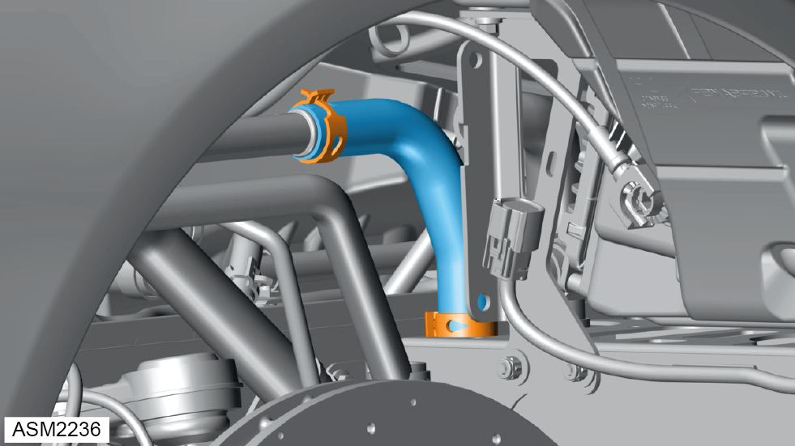

Hose - Auxiliary Radiator Outlet - 4 Cylinder
Print
Operation Code: 46.01.52-02
Removal
- Drain coolant. Refer to procedure.

- Release clamp securing auxiliary radiator outlet hose to auxiliary radiator intermediate outlet pipe.
- Disconnect auxiliary radiator outlet hose from auxiliary radiator intermediate outlet pipe.
 WARNING: Coolant is a toxic substance and can be lethal if ingested.
WARNING: Coolant is a toxic substance and can be lethal if ingested.
NOTE: Drain coolant into a suitable container and dispose of appropriately.
- Release clamp securing auxiliary radiator outlet hose to auxiliary radiator.
- Disconnect auxiliary radiator outlet hose from auxiliary radiator.
- Remove auxiliary radiator outlet hose.
Installation
- Installation is the reverse of removal procedure except for the following:
- Refill coolant.